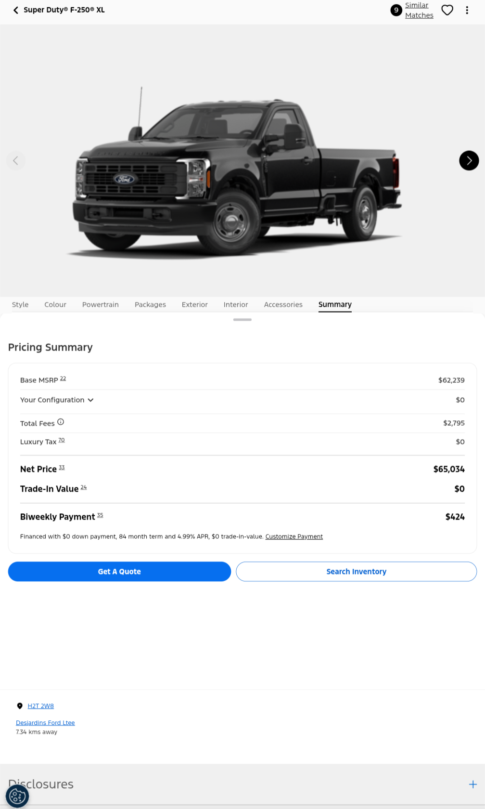
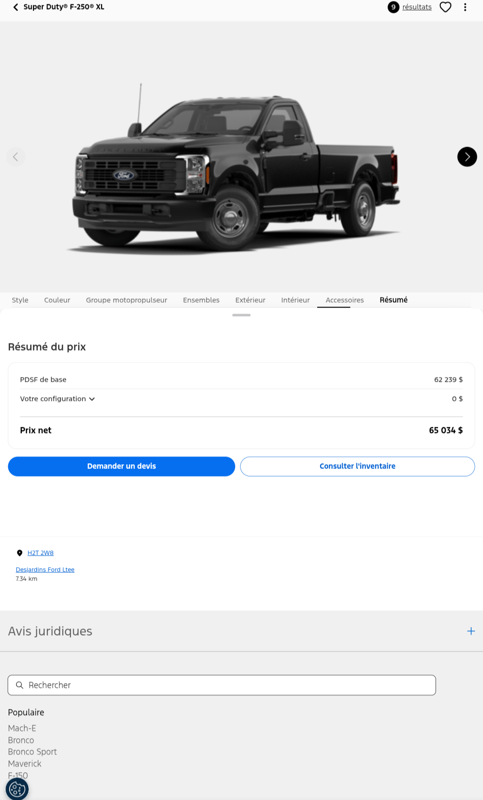
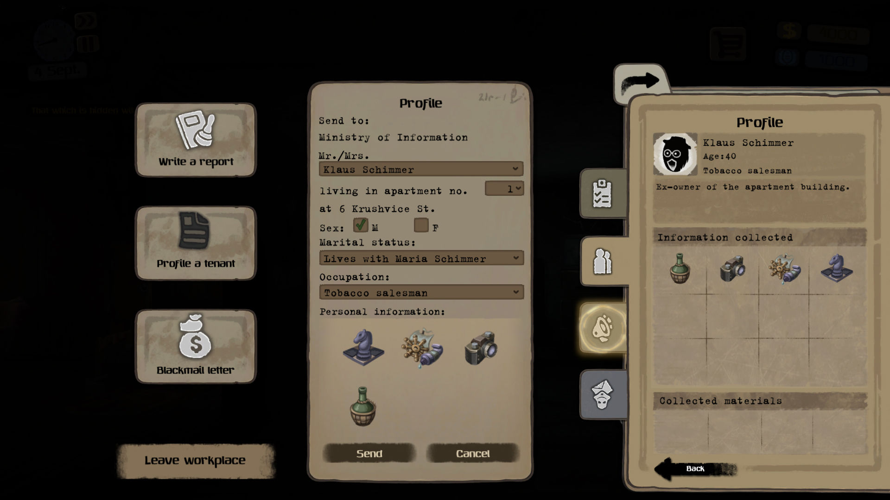
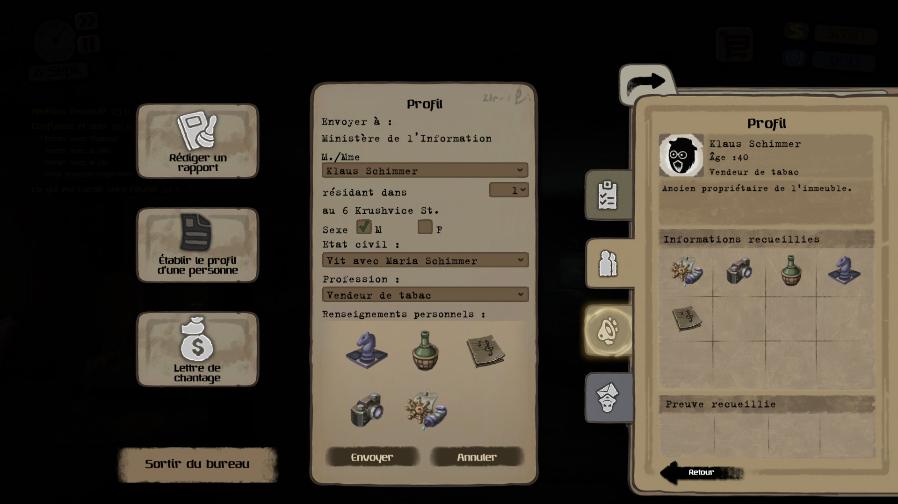
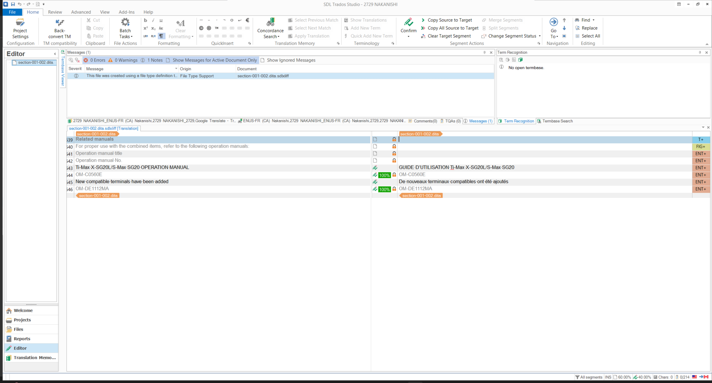

Translation & Localization
English to Canadian French for corporate, digital and specialized content, with terminology and audience adaptation built in.
I combine Canadian French language expertise with structured instruction design, linguistic evaluation and workflow automation to make language systems more consistent, context-aware and useful in real workflows.
From a single high-stakes document to a multi-batch localization workflow, I adapt the level of linguistic and contextual control to the work.
English to Canadian French for corporate, digital and specialized content, with terminology and audience adaptation built in.
Comparative editing, copy editing and final proofreading to improve accuracy, flow, consistency and readability.
Manuals and documentation where component relationships, procedures and nomenclature must remain exact.
Machine translation post-editing, comparative review, proofreading and in-context linguistic quality assurance.
Glossaries, translation memories, QA checks, brand rules and repeatable controls for complex content environments.
Creative adaptation, copywriting, SEO content, subtitling and text that carries intent across markets.
Language services are the core of my practice. This selection spans automotive, technology, media, public-sector, industrial, financial and editorial contexts. Documented word counts are shown where available.


Localizing an interactive vehicle configuration journey across filters, model pages, pricing and legal disclosures.
A localized automotive interface must function as a coherent journey, not as a series of independently translated segments.


Localizing a PC game and testing dialogue, menus, messages and choices in their actual environment.
A successful game localization is verified in the game itself, not only in a string table.

Specialized documentation for dental and oral surgery instruments, with terminology kept stable across tables, legends and instructions.
Specialized technical documentation must remain coherent in its terminology, component relationships and instructions for use.
Translation of the TSC 900 operations and maintenance manual, preserving the logic between the GHC, SCU and transfer sequences.
In an operations manual, terminology must follow the system’s architecture and its operation.
Post-editing operational Visio workflows for call-centre agents, with terminology, character limits and source-target controls.
In a call-centre workflow, a sentence must be correct, easy to locate and immediately usable by the agent.
A documented cluster of institutional mandates requiring Canadian French consistency and terminology research through TERMIUM Plus.
Reliable institutional translation rests on traceable terminology research and consistency maintained from one mandate to the next.
Technical translation and comparative editing across equipment families, product codes and industrial functions.
In industrial documentation, linguistic quality also depends on stable classifications, functions and relationships between equipment.
Translation, full post-editing and proofreading for Web content delivered in multiple related batches.
A multi-section website requires a stable editorial memory, even when batches are distributed across several services and production periods.
Maintaining voice and terminology across a complete 62,196-word book intended for church members.
For a long-form work, quality depends as much on consistency of voice as on the accuracy of each sentence.
Two related mandates requiring stable terminology in a specialized reinsurance context.
In a specialized financial field, terminology must remain precise and stable even when mandates are split across multiple invoices.
A fact-based professional review mandate. The type of source document remains undisclosed.
When a client document cannot be reproduced, the evidence can remain factual: client, service, language pair, volume and period.
Proofreading informed by the project memory, glossary and the rule that the brand name remain unchanged.
Quality proofreading considers the project memory, glossary and brand rules, not grammar alone.
I design and evaluate language-centered AI workflows with explicit instructions, source-grounded constraints, reusable structures and human review points. My focus is not generic automation: it is making language systems more consistent, context-aware and usable.
Structured system instructions, modular reference files, conditional routing, task-specific templates and explicit output constraints.
Reusable AI skills that guide voice, register, structure and context while preserving clear identity and safety boundaries.
Canadian French expertise, comparative review, terminology control, guideline-based assessment and identification of linguistic inconsistencies.
Document extraction, API-connected workflows, migration, batch processing, structured records and human-in-the-loop review.
HTML/CSS, Python, JavaScript, Google Apps Script, REST APIs, document automation and structured content formats.
My applied projects explore how explicit instructions, structured source material, reusable templates and human review can make AI-assisted writing and information workflows more consistent and traceable. These are independent and internal projects—not commercial AI-evaluation assignments.
A modular instruction system that models a distinctive authorial voice across formats and registers, while preserving human editorial authority.
A NotebookLM instruction architecture that classifies a character’s relationship category and routes the requested analysis to a task-specific template.
A Google Apps Script pipeline that extracts supported document content, creates structured Notion pages and preserves links to original Google Drive files.
A Google Workspace web application that brings email categorization, document organization and structured contact information into a more traceable workflow.
Since 2013, I have worked on translation, localization and content adaptation for organizations across a wide range of industries.
Ford / Lincoln · Web localization and interactive modules
Nissan / Mazda · User interfaces and technical documentation
Harley-Davidson / Indian Motorcycle · Brand content and specifications
Polaris Industries · User guides and rider manuals
U.S. Automotive Parts Group · Commercial documentation and distribution
Google / Microsoft · Digital and advertising content
Electronic Arts / Sony · Video games, player support and consumer electronics
HP / Lenovo / Acer · Computer hardware and IT
Bell Media / Globe Newswire · Broadcasting, news distribution and media
Hikvision / CMC Microsystems / MSDSonline · Specialized software and microelectronics
Johnson & Johnson / McKesson · Medical devices and pharmaceutical distribution
Pfizer / Sanofi / Roche / Merck · Research and pharmaceuticals
GE Healthcare / Baxter / Leo Pharma · Diagnostic equipment and clinical care
Accreditation Canada / Health Standards Org. · Quality standards and compliance
Olympus / Nakanishi · Optical and surgical instruments
Unilever / L'Oréal / Tresemmé · Personal care, beauty and consumer goods
Ralph Lauren / Oakley / Adidas / Foot Locker · Fashion, sportswear and retail
IKEA / Réno-Dépôt / Sobeys / Toys "R" Us / Sears · Mass retail and supermarkets
SharkNinja / Gorilla Glue / Elmer's · Household products, tools and adhesives
NFL / Walt Disney · Entertainment, media production and professional sports
Kraft Heinz / Pepsi / McDonald's / Burger King · Food, beverages and quick-service restaurants
Stella Artois / Sodexo · Beverages, food services and facilities management
Visa / Citicorp / CIBC / U.S. Bank · Banking and payment networks
Deloitte / Baker & McKenzie · Consulting, accounting and law
State Street / Lazard Asset Management / Nasdaq · Asset management and financial markets
Sun Life / RGA Reinsurance · Life insurance, reinsurance and wealth management
Air Miles / Elavon · Loyalty programs and payment processing
Total / Goldcorp / Teck · Energy, mining and natural resources
3M Company / GE Lighting · Industrial products and lighting solutions
Hitachi / Cummins / Gates Corporation · Industrial equipment and powertrain
Sherwin Williams / Tenneco / Bridgestone · Industrial paints and automotive components
Teledyne / CMC Electronics · Aerospace electronics and avionics systems
Government of Canada / Transport Canada · Public services, procurement and regulations
Bentall Kennedy / Via Capitale · Commercial real estate and brokerage
Le Groupe Maurice · Retirement residences and senior care services
The same discipline applies to language services and AI workflows: define the task, structure the rules, control evidence and make the output repeatable.
Clarify the output, audience, source materials, boundaries and success criteria.
Separate reusable rules, reference material, routing logic, terminology and task-specific templates.
Specify when the system must consult source material, verify details or avoid unsupported conclusions.
Use explicit formats, consistency checks and in-context review before delivery.
Since 2013, I have worked across technical, digital, institutional, financial, editorial and gaming content. My practice combines Canadian French language expertise with structured editorial systems, AI instruction design, document migration, software architecture and workflow automation.
I work across CAT tools, terminology systems, QA workflows, document processing, API integrations, low-code automation and web technologies.
“She has a genuine gift for writing, capturing the essence of a text while respecting its core message. She consistently meets editorial requirements, and production schedules and deadlines hold no secrets for her.”
“She is officially recognized as one of our most trusted proofreaders. We rely on her to screen and evaluate the final work of other French Canadian linguists for our team.”
“Her professionalism, precise choice of words, and perfect understanding of our expectations make her a true specialist. I recommend her without hesitation.”
Rates are listed by service category. Final pricing depends on volume, content type, resources, context and timeline.
For clearly defined, rubric-based tasks. Excludes specialist medical, legal, scientific, safety or advanced model-evaluation work.
Send the context, format, language pair or workflow, approximate volume and timeline. I will help identify the right level of linguistic, instructional and contextual control.
Open to AI language evaluation, data-quality and structured workflow opportunities.